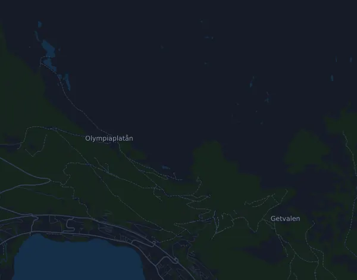

Åre Vertical K 5 km
- Matka
- 5 km
- Nousumetrit
- ↑ 1 013 m
- Korkein kohta
- 1 407 m mpy
- Alusta
- Maasto ja polku
- Luonne
- Vuoristoinen
- Lähtö
- klo 17:50
Korkeusprofiili
Valmistaudu Milan kanssa
Mila on juoksuvalmentaja sovelluksessa. Kun lisäät kisan suunnitelmaasi, valmentaja suunnittelee viikot starttiin asti kuntosi mukaan ja antaa sinulle loppuaikaennusteen sekä suunnitelman vauhdista, juomisesta ja energiasta reitillä.

Oikea harjoitus. Oikea päivä.
Reitti

Tietoa reitistä
Åre Vertical K on 5 km:n polkujuoksu (Årefjällen, Ruotsi). Reitillä on nousua 1 013 m ja laskua 5 m, 203 m/km, joten reitti on vuoristoinen. Korkein kohta on 1 407 m ja matalin 398 m merenpinnan yläpuolella.
Suurin nousu alkaa kohdassa km 0,0: 1 009 nousumetriä 5 km:n matkalla, keskimäärin 20,4 %, ja huippu on 1 407 m mpy.
Mila-sovelluksessa valmentaja kuvailee reitin tarkasti omalla kielelläsi ja suunnittelee vauhtisi ja energiasi sille.
Nousut
| Alkaa kohdassa | Pituus | Nousumetrit | Jyrkkyys | Huippu (m mpy) |
|---|---|---|---|---|
| km 0,0 | 5 km | 1 009 m | 20,4 % | 1 407 |
Ennen lähtöä
Lähtöajat
- klo 17:50
Lähtöpaikka
Åre torg
Vauhtitaulukko
Åre Vertical K 5 km ajassa 20:00 – vauhti kilometrillä ja väliajat
4:00 min/km · km 1: 4:00 · km 2: 8:00 · km 3: 12:00 · km 4: 16:00 · maali: 20:00
Åre Vertical K 5 km ajassa 25:00 – vauhti kilometrillä ja väliajat
5:00 min/km · km 1: 5:00 · km 2: 10:00 · km 3: 15:00 · km 4: 20:00 · maali: 25:00
Åre Vertical K 5 km ajassa 30:00 – vauhti kilometrillä ja väliajat
6:00 min/km · km 1: 6:00 · km 2: 12:00 · km 3: 18:00 · km 4: 24:00 · maali: 30:00
Åre Vertical K 5 km ajassa 35:00 – vauhti kilometrillä ja väliajat
7:00 min/km · km 1: 7:00 · km 2: 14:00 · km 3: 21:00 · km 4: 28:00 · maali: 35:00
Ajat olettavat tasaisen vauhdin koko matkan. Tämä on pelkkää laskentaa, ei ennuste: mäissä, ruuhkassa ja juomapisteillä vauhti vaihtelee.
Usein kysyttyä
Åre Vertical K 5 km: milloin kisa juostaan?
Åre Vertical K 5 km juostaan tiistaina 3. elokuuta 2027. Tarkista päivä ja lähtöaika järjestäjältä.
Åre Vertical K 5 km: mihin aikaan lähtö on?
Järjestäjän mukaan: klo 17:50.
Åre Vertical K 5 km: kuinka pitkä matka on ja paljonko nousua on?
Matka on 5 km, nousua 1 013 m ja laskua 5 m. Korkein kohta on 1 407 m mpy.
Åre Vertical K 5 km: millainen reitti on?
Reitti on vuoristoinen, nousua keskimäärin 203 m kilometrillä. Reitillä on yksi vähintään 25 nousumetrin nousu, kohdassa km 0,0: 1 009 m 5 km:n matkalla. Reitti kulkee lähdöstä maaliin, joka on eri paikassa. Alusta on maastoa ja polkua.
Åre Vertical K 5 km: miten jaan vauhtini?
Pyri tasaiseen rasitukseen mieluummin kuin tasaiseen vauhtiin: anna vauhdin hidastua ylämäissä, ota se takaisin, kun maasto tasaantuu, ja jarruttele ensimmäisillä kilometreillä. Suurimmat nousut alkavat kohdissa km 0,0. Milasta saat juuri tälle reitille vauhtisuunnitelman oman kuntosi mukaan.
Lisää samanlaisia kisoja
Lisää kisoja lähellä
- Fjällmaraton 100K5. elokuuta 2027 · Årefjällen, Ruotsi
- Ottsjö 12K (1 augusti)1. elokuuta 2027 · Årefjällen, Ruotsi
- 27K1. elokuuta 2027 · Årefjällen, Ruotsi
- Minimaraton 1500 m 1,5 km31. heinäkuuta 2027 · Årefjällen, Ruotsi
- Minimaraton 800 m 0,8 km31. heinäkuuta 2027 · Årefjällen, Ruotsi
- Kia Fjällmaraton 45K7. elokuuta 2027 · Årefjällen, Ruotsi
Valmistaudu Milan kanssa
Oikea harjoitus. Oikea päivä.
Tiedot ovat reittitiedostosta ja järjestäjän tiedoista. Tarkista päivä, lähtöajat ja säännöt järjestäjältä.
Mila ei ole yhteydessä järjestäjään eikä kisan sponsoreihin, eivätkä ne sponsoroi tai suosittele Milaa. Nimet ja tavaramerkit kuuluvat omistajilleen. Järjestäjä tai oikeuksien haltija? Pyydä muutosta tai poistoa